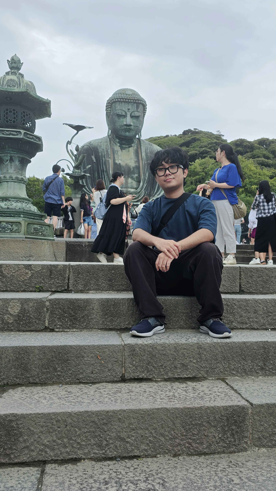

Htut Aung

I am a third year student pursuing my bachelors in Computer Science. I am 24 years old and technically Jamaican because I was born here but both of my parents are from Myanmar. I enjoy visiting countries especially Japan and actually visited a few times, hoping to see myself live there one day but who knows what the future holds. My hobbies are programming, games, reading, learning new languages (I am currently in a Japanese course at UWI) and my most favorite sleeping.
I am interested in Web Development because I had dabbled in HTML and CSS but now I really want to take it seriously. I am greatly intrigued by how websites are made and this is a great skill to have nowadays as a worker in this field. One of my colleagues also introduced me to Web Development and told me it was definitely mandatory for me and even fun so here I am, ready to learn and am excited to develop websites as a hobby and even as a business in the near future.